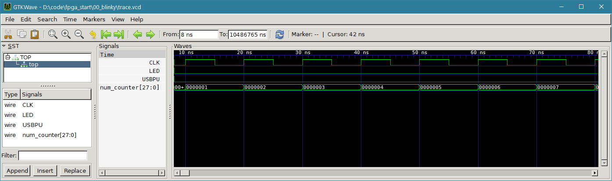
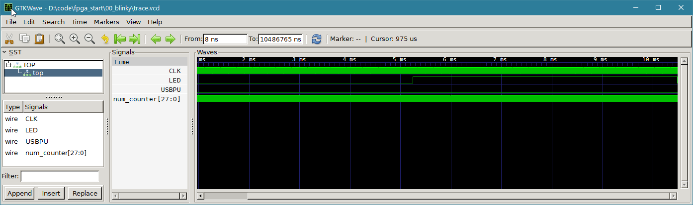

FPGA Design for Software Engineers, Part 1 - Verilog and State Machines
Jeff DeWall 20 min read October 16, 2019 #FPGA #VerilogOver the last few years I've gotten more interested in electronics and FPGA design. I've also noticed that a lot of other software folks seem interested in doing the same, but often don't know where to start. So, I think I have some interesting advice for software engineers that feel like dipping their toes into the hardware world from the point of view of a software engineer.
In this post I'll go over FPGAs in general, the basics of the Verilog language, simulating a design and deploying it to an inexpensive TinyFPGA-BX board.
Article Series
- Verilog and State Machines
- Simulation and Build Tools
- Seven Segment Displays
- Docker Builds
- Build System Updates, ECP5 Support
- Time-Multiplexed Seven Segment Displays
Updates Feb 23, 2021
As mentioned at the end of this article, I've moved the main repository over to GitHub, so the article has been updated with links to that repo. I've also switched from tags to branches so that things like the new Docker build system from this article can be added more easily. The branches follow the format post_N so this post's branch is post_1.
Updates Nov 14, 2022
In the Build System Updates, ECP5 Support article, I mentioned a number of updates that will change what you see in the repo. In particular, with ECP5 support and Docker used as the main build system, building looks different, and is much easier in my opinion.
For exampe, rather than using make to build blinky below, you would use dev.sh build 00_blinky.
Starting with FPGAs
FPGAs, short for Field Programmable Gate Arrays, are chips that contain loads of look up tables that can be programmed such that they can implement digital circuits. Nowadays they also contain many other devices baked right into the chip, such as RAM blocks, multiplier circuits, and sometimes even whole CPUs with the ability to hook up to the lookup table/logic gates. These programmable logic gates are sometimes referred to as the programmable fabric of the FPGA.
There are many vendors, but Xilinx and Intel (formerly Altera) are the biggest. Lattice also makes FPGAs and the best part is that due to reverse engineering efforts from project IceStorm there are open source tools for building the binary blob, called a bitstream, that is loaded onto the FPGA.
FPGAs, like ASICs (Application Specific Integrated Circuit), are still most often programmed in an HDL (Hardware Description Language). The two you'll hear about are VHDL and Verilog. Verilog is a bit more like C and VHDL has an Ada inspired syntax.
FPGAs are not (typically) programmed in a high level language like C/C++, Python, etc. There is however work being done to use C++ on FPGAs though with support from the chip vendors themselves. Using so-called High-Level Synthesis compilers, such as the Vivado HLS or the Intel HLS compiler, #prgama annotated C++ can be compiled into corresponding Verilog or VHDL modules that can then be syntehsized for use on the FPGA.
Other higher level languages for hardware description exist such as a Scala derived language called Chisel, and a Python based language called Migen although I haven't looked at using either of those personally.
Why choose Verilog over VHDL
I originally learned some VHDL in college and was keen to stay with that rather than learn Verilog. I eventually bit the bullet and picked up Verilog solely because of the tool Verilator. It's an open-source simulator and is really great.
Most of the professional FPGA tools take ages to compile a design compared to what software engineers are used to. I've had Quartus (Intel's toolset) take a few minutes to compile a couple of modules. That makes the development cycle really painful.
Verilator is a tool for taking Verilog code and compiling it into C++ modules in order to do simulation. The major benefit is that Verilator takes a couple of seconds to compile the same design that Quartus takes minutes on. So especially when you're just learning Verilog and need to iterate while learning the syntax, I heavily recommend starting with Verilator.
You also write your testbench (think unit/functional test code) in C++ rather that trying to write that in Verilog. I find writing imperative test code in C++ far easier than doing so in Verilog.
Having your code simulated in C++ also opens up some interesting possiblities to mock out portions of the system you want to test. For example, I was able to create a VGA test pattern generator and simulate it within C++ hooking it up to a mocked VGA monitor that output to an application window using SDL2.
Starting with Electronics
Although not strictly necessary for what we're doing in this article, you'll need to know some basic electronics as soon as you want to start interfacing to the outside world. As I mentioned in my article about classic textbooks you can find at archive.org, there are tons of resources online for learning electronics.
The first thing to do is grab The Art of Electronics 2nd Edition from archive.org, which is a classic book that you hear recommended by many people. There you can read up on theory and many practical details too. The most basic things to know well are Ohm's Law, RC circuits and calculating power.
If you're coming in to do digital circuits, you can skip Bipolar Junction Transistors and Op-Amps for now. They're great to understand, but for blinking an LED or communicating with a device over I2C, they're not strictly necessary.
Video-wise I definitely recommend Ben Eater's videos on building a CPU on a breadboard. It's a great bridge between electronics and the software world. He describes a lot of practical details like using current limiting resistors to keep your LEDs from burning out.
I also enjoy watching the EEVBlog. If you want to try building things yourself, check out his video on setting up an electronics lab for cheap. It's not totally up to date and some links are broken but you can find replacements easily enough.
Where to begin
Before we dive into some basics of Verilog, we'll want to install some tools and if we want to test on a real device, determine which one fits our requirements.
(Software) Tools
I'll be showing examples in Verilog and simulating them with Verilator. When simulating a design on the PC, it can useful to see the waveform trace. The trace is just the state of all signals in the design at each point in time during simulation.
Verilator can be setup to write out to a standard .vcd format which you can view in GtkWave.
I typically run Windows Subsystem for Linux (WSL) and do all of my building/simulation in that environment and so I'll be assuming you're using that or Linux and know how to get these tools setup.
You'll want to install Verilator from source, following the instructions on its website.
Some Interesting Boards
There are a lot of cheap-ish boards nowadays, such as the DE10-Nano from Terasic which uses an Intel Cyclone V FPGA, or the Arty A7 by Digilent which uses an Artix-7 FPGA from Xilinx.
Note the Cyclone V has an embedded ARM core, whereas the Artix-7 does not. If you want a Xilinx FPGA that has one of these HPS (Hard Processing System, aka baked-in CPU), take a look at the Zybo-7 which uses a Zynq FPGA.
TinyFPGA-BX
If you want to go for a really cheap device, check out the TinyFPGA-BX. I grabbed one for $38 and it was a great purchase. It's based on a Lattice FPGA, and as I mentioned above, lets you use an open-source toolset.
I was able to write the HelloWorld of electronics, a blinking LED, and deploy it to my TinyFPGA-BX board in about 20 minutes. Keep in mind you probably will want to solder on pin headers to use the board on a breadboard, so remember that is doesn't come with them pre-attached.
We'll use the TinyFPGA-BX board as the target board for the reset of this article.
Now with all of that background on FPGAs and tools, let's go through a making a simple design with Verilator, simulating it, and then building it for the TinyFPGA-BX.
Thinking about Hardware Design in HDLs
You often hear people mention how hardware programming, more often called designing, with Verilog or VHDL is so different from normal programming. To an extent this is true, in that it doesn't resemble a normal imperative style and certainly not an object oriented style. On the other hand, software folks are used to doing similar types of development in different areas.
In my mind it's easier to think of hardware designs as data flow graphs. In HDLs you are declaring modules that are hooked together to implement various functionality. Each module is made up of connections of wires and/or as processes that trigger on some condition, typically a clock signal and maybe a reset signal. You can think of processes as logic updates that trigger based on an event such as the clock.
A clock signal is just a value that toggles between 1 and 0 at some constant rate. So you might talk about having a 200 MHz clock signal meaning it toggles between high and low 200e6 times per second.
Wires that connect modules together can be thought of like wires in a circuit board and one wire corresponds to a single bit. You can have a collection of wires, called a bus, to have larger values, e.g. a byte, flow in and out of modules.
What that means is that you are laying out blocks which interconnect with each other, sort of like how you would set up a complicated shell command. It's just that here you can have many inputs and many outputs, and can end up with much more hierarchical layouts. That is, a module can be made up of a bunch of smaller modules and just stitches them together.
Another way software engineers can relate, is that designing a hardware module is a lot like doing stream programming; you don't have general access to the next or previous items, unless you save them off in a temporary variable, you just operate on your current inputs and produce your output.
So when we look at our inputs and outputs in our modules, you can look at them as streaming interfaces of bits (or booleans), some of which are grouped together to make larger values like bytes.
Types of Circuits
Combinational Circuits
For modules that are not clock driven, called combinational circuits (or sometimes combinatorial circuits), you are just hooking inputs through various logic operations, and producing outputs. Since our wires are just booleans, we can use all of the normal logic operations: and, or, xor and not.
But enough chatting, let's see some actual Verilog code. Here is a module that take two inputs wires and produces an xor of them as one ouput and an and of them for the other output signal:
// This declares a module named 'half_adder'
// Between the parentheses are the declaration of 'ports' which are inputs
// and outputs to this module. I've prepended an i_ for inputs and o_ for outputs,
// but that is just a convention.
// Although we named ports above, we still need to mark whether or not
// those signals are inputs or outputs here.
input i_a, i_b;
output o_value, o_carry;
// These staements hook the outputs to the results of the inputs and
// some logical operations. '^' means bitwise 'xor' and '&' for bitwise
// 'and'
assign o_value = i_a ^ i_b;
assign o_carry = i_a & i_b;
This module defines a half-adder which takes two bits and produces the output of adding those two bits together also allowing for overflow and carrying the bit out to the next adder block in line.
Just as an aside: Seeing this circuit in my digital circuits course in college years ago was a big aha moment for me. It was when I first saw how you could go from simple logic operations that you could implement pretty easily with bare transistors and start building up more complicated useful blocks.
In this module there is no clock, and no memory used. It's sort of like a pure function: The output only depends on the inputs in this case. Things get more interesting when you store values, sometimes called storing state.
Sequential Circuits
For clock driven modules, called sequential circuits, it's a lot like having an update tick function. You have whatever input parameters, some state/memory within your module, and on each tick you need to decide how to change your outputs.
Here's a simple module that takes a clock signal and has an update block that will run every time the clock changes to a 1. This change from 0 to 1 is also known as the positive edge of the clock signal as it changes from a low to high value.
input i_clk;
// The array syntax here says make a collection of 8 bits (from 7 down to 0)
// and not only is it the output, but make it a register, a.k.a store the value
// between clock ticks.
output reg [7:0] o_value;
// This statement marks a block that should be run whenever the 'sensitivity list'
// changes. In this case whenever the clock transitions from a '0' to a '1'
always @(posedge i_clk)
begin
// When o_value gets too big, it will overflow and roll back to 0
// Note the different syntax for assigning a value in a sequential block with
// '<=' instead of '='
o_value <= o_value + 1;
end
A module can contain multiple blocks, sequential or combinational. The assign syntax in the first example is one way to lay out combinational connections, the other is with always @(*) blocks, which are basically the same thing.
Why have a clock?
One question that might come up is why do you even need a clock signal? Why not just let things update as fast as they can? The problem there is that real circuits take time for their values to settle. This is based on how they get laid out on the actual chip and how long it takes for signals to propogate around.
So there is some time that the result can be bouncing between various values while the inputs stay constant. You don't want those intermittent values to get used downstream as inputs to the next part of your design, so you need to some sort of way to decide when values are valid. A clock signal is the way to do this.
This is also why you can only run a circuit up to some maximum clock frequency. Your design might need X nanoseconds for the worst-case path, called the critical path, to settle to its correct value. If you run your circuit faster than that, you may latch (save) the wrong value and your design won't operate as you expect.
Simulating and Deploying Designs
So let's create a simple blinky LED example on the TinyFPGA-BX. This example is basically the template from the TinyFPGA-BX User Guide. The difference is that we'll simulate with Verilator first and make sure things look good before deploying to our board.
You can grab the repo with the code from Here. We'll start with the 00_blinky example.
In that example, the apio.ini, install_apio.bat, install_apio.sh and pins.pcf are taken as is from the apio_template portion of the TinyFPGA-BX guide. The top.v is our verilog module that will blink the on-board LED periodically. Main.cpp is the test code that we will compile with Verilator to create a program that simulates our design on our PC before trying it on the board itself.
The testbench code in main.cpp uses a template class for handling some basics like ticking the clock signal, and writing out waveform values. This is based off of this ZipCPU blog article and is located at support/TestBench.h.
If we look at the top.v module we can see the following:
// look in pins.pcf for all the pin names on the TinyFPGA BX board
// drive USB pull-up resistor to '0' to disable USB
assign USBPU = 0;
// keep track of time and location in blink_pattern
reg [27:0] num_counter;
// increment the blink_counter every clock
always @(posedge CLK) begin
num_counter <= num_counter + 1;
end
// light up the LED, using the 20th bit of our counter.
assign LED = num_counter[19];
The module defines an input clock signal, the LED output signal and an output for the USB Pull up resistor, which was taken as is from the TinyFPGA-BX blinky exmaple. We have a counter that increases by one every clock cycle and we see that on the last line of the module the LED should be on whenever the counter's 20th bit is a 1 and be off whenever the bit is a 0. Go into your terminal and run make to build blinky and then run it. It's compiled into a normal executable with Verilator, so you don't need the FPGA hooked up or anything at this point.
It might take a few seconds for it to run, and afterwards you should see a trace.vcd file get created. Let's view the waveform in GtkWave. Open up GtkWave and choose File -> Open New Tab, navigate to the trace.vcd file and open it. You'll see the following if you expand the TOP item in the tool window on the left side:
You can then select the CLK, LED, and num_counter signals, right click and choose Recurse Import -> Append to add the waves to the main portion of the window.
What you'll see is the following:
Hmm, looks like our LED isn't blinking. What's going on? The problem is we're zoomed in way too close. We designed the blinking to be based on a 16Mhz input clock, and the LED turns on with the 20th bit, which means it takes 1048576 clock ticks for the LED to change.
We therefore expect in real life the LED to change states (1/16Mhz)*1,048,576 = ~0.065 seconds, so just a bit more than 10 times a second.
If we zoom out our simulation we see:
Note that in our simulation we haven't set the tracing timescale to correspond to our real world clock, so you can't trust the time values in this case.
Deploying to the TinyFPGA-BX board
We can now test our design on the real hardware using the apio program that the TinyFPGA-BX user guide discusses installing and using. Rather than using the Atom editor we'll directly use the terminal instead.
When you plug the board into your computer it will initially be in a waiting state, expecting you to upload a bitstream with the user LED fading in and out:
With the board connected to your system with a USB cable, you can run apio build and then apio upload. As I'm using windows, even though I run the simulator from a bash prompt, I run the apio commands in cmd.exe. I haven't taken the time to see if I could get the USB connection working through the WSL layer.
Running apio upload should result in output similar to the following:
and you should see a rapidly blinking LED like in the video below:
Performing a sequence of steps in Hardware
So the question arises, how do you actually carry out an algorithm in hardware? The answer is a state machine. You have a series of steps, each one being a state, and you move from one state to the next evaluating the state per clock tick.
You can imagine your algorithm as a series of steps, down to the level of instructions if you wanted, where the current state index acts as the program counter.
With state machine you can create looping behavior or conditional behavior as well. By changing what your next state is, you can create loops, or branches within your state machine's execution.
So let's go through a quick example of state machines as implemented in Verilog. We'll create a simple state machine with three states where after a numner of clock ticks we'll proceed to the next state, where in the third state we move back to the initial one.
In the initial state we'll keep the LED off, move to blinking the LED in the second state, which I've called A and finally we'll hold the LED on in the third or B state.
You can follow along in the 01_state_machine example in the repo. You can also just check out the entire verilog code on GitHub Here.
First lets declare some constants for our states and a numbr of ticks per state.
// We'll use four update ticks per state.
= 4*NUM_CYCLES_PER_UPDATE;
// Provide some names for the constant values of our states.
= 0;
= 1;
= 2;
In Verilog, you can use the localparam keyword to define a constant for your module. There also exists a parameter keyword, but that is for adding parameterization to modules when they are instantiated, such as creating a 32 bit adder instead of an 8 bit adder.
You may also notice that we're using a constant named NUM_CYCLES_PER_UPDATE. In this example, we'll look at how we can use the preprocessor to define different values for constants based on whether we are simulating the circuit or for when we're running on the actual board.
The preprocessor in verilog starts with a backtick, and similar to C there are the idef, ifndef, else, and endif directives.
`ifdef SIMULATION
// When running the simulation, we will lower the number of cycles to make
// it easier to read the waveform output.
= 1 << 4;
= 2;
`else
// On the real board, our clock is 16MHz, so in order to see the LED pattern
// we need to consider how many cycle ticks we should have. In our case
// 16*1000*1000 is one second, which is roughly when the 24th bit toggles.
// We'll use that as our algorithm's tick delay.
= 1 << 24;
// We want the blink pattern to be 4 times per update tick, aka 2 bits less.
= 22;
`endif
In this case, we'll define the SIMULATION variable for the preprocessor in our Makefile when we call Verilator, and when we use apio to run the example on the TinyFPGA BX board, we won't have this defined and we'll synthesize the design with the values in the else branch.
With our constants defined, we can now get to the meat of this example, which is broken up into two processes. The first process is where we update our counter and handle state transitions.
// Handle counter and switching between state
always @(posedge CLK) begin
if(counter < NUM_CYCLES_PER_STATE) begin
counter <= counter + 1;
end
else begin
counter <= 0;
case (curr_state)
INIT_STATE, A_STATE:
curr_state <= curr_state + 1;
default: // B_STATE too
curr_state <= INIT_STATE;
endcase
end
end
You'll notice we were able to comma separate the first two states in the case statement in order to run the same block in those cases. You can't do the same thing with the default label though, so we just let the B_STATE fall through to the default case there.
In the second process we look at the current state and assign the LED the value for that state, using a bit in our counter for the blinking case.
// Determine LED behavior from the current state.
always @(posedge CLK) begin
case (curr_state)
INIT_STATE:
LED <= 0;
A_STATE:
LED <= counter[LED_BLINK_BIT];
B_STATE:
LED <= 1;
default:
LED <= 0;
endcase
end
Once we run make and then the resulting state_machine_01 executable, we can view the trace.vcd waveform and should see the following once the relevant signals are added and we zoom out a bit:
We see our circuit runs as expected moving between states and eventually resetting back to the initial state. We also see that the LED behavior changes as we move from one state to the other. If we zoom in a bit, we can see the clock cycles more clearly and the LED toggling on and off in the A state.
Deploying to the TinyFPGA-BX board
Similarly to the LED example, we can run apio build and apio upload to synthesize and load our design onto our TinyFPGA-BX board.
Conclusion
We've now seen how we can build up simple designs for an inexpensive FPGA board, using Verilator to simulate our modules using C++ beforehand. There is a lot more that we can dive into with FPGAs and in a future article I plan to show how to drive some seven segment displays as well as build up a VGA timing circuit.
I hope you've enjoyed this introduction. If anything is unclear, feel free to leave a comment below!
EDIT: Updated term combinatorial circuits to combinational circuits as that seems to be the more often used term. Thanks anton for the comment!